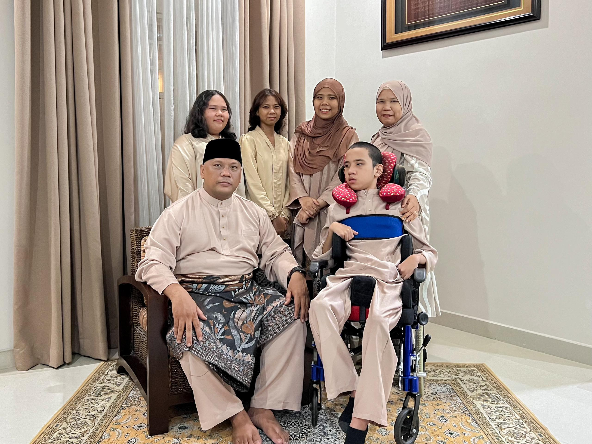
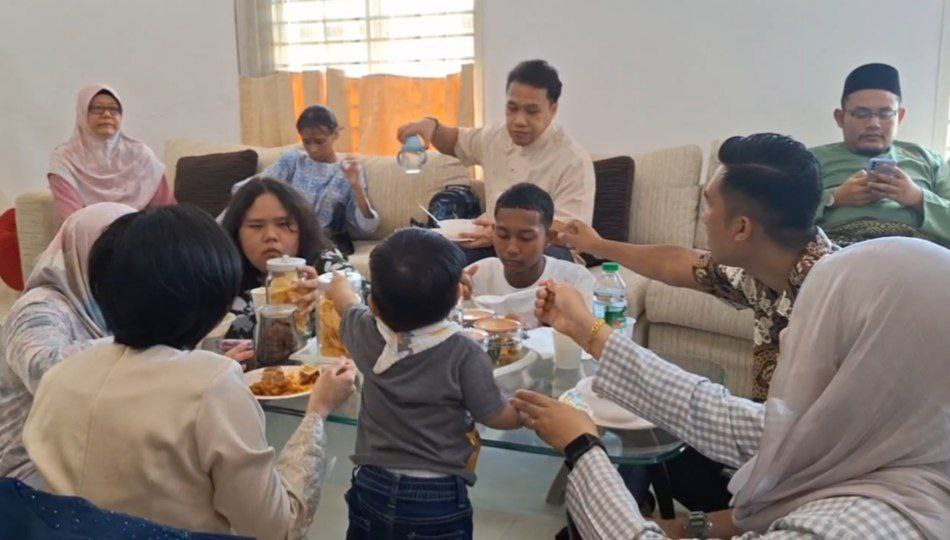

EID AL-FITR
Eid al-Fitr
also known as Hari Raya Aidilfitri
Click Me!

Since it signifies the end of the month-long Ramadan fast, which involves not only visiting family and close friends but also going back to the village, decorating, lighting lanterns, and other activities, Eid al-Fitr is the earlier of the two official holidays celebrated within Islam (the other being Eid al-Adha). Muslims around the world celebrate Eid al-Fitr.
The ketupat is a well-known representation of Malaysian Hari Raya festivities. A unique meal that is still served today is ketupat. Ketupat, which is steamed rice wrapped in palas or coconut leaves, is sometimes served with rendang. Kuih Raya, lemang, lontong, and dodol are some other delicacies. Nonetheless, it is also encouraged to employ other Islamic symbols for Hari Raya Aidilfitri, such as the names of Allah and the Prophet Muhammad, flowers, plants, geometry, and other symbols that lack haram aspects.
Malaysians celebrate Hari Raya Aidilfitri with considerable fervour. The spirit of Aidilfitri preparations was felt weeks before the celebration itself. Shopping centres will be heavily decked and offer great deals. Television and the radio will also play Raya tunes. Plans centred on Aidilfitri will be displayed. In observance of Aidilfitri, banks, schools, and commercial buildings will be closed for a few days to a week. 
There will be traffic jams on the nation's major thoroughfares as a result of city dwellers travelling back to their hometowns to celebrate Aidilfitri with their loved ones. Another name for this phenomena is Balik Kampung.
On Hari Raya, males in Malaysia dress traditionally in baju melayu. There is a songket attached to this dress, and it wraps around the waist. Women are traditionally dressed in baju kurung and baju kebaya.
There are two ways to start Hari Raya Puasa. For example, by calculation (calculation) or by rukyah (viewing the moon). In the Islamic Hijrah Calendar, the month of Syawal, the tenth month, begins on the day of rukyah, when the crescent moon becomes visible. In various key locations throughout Malaysia, cops on duty will monitor the new moon in the afternoon till sunset.
TOP
HOME